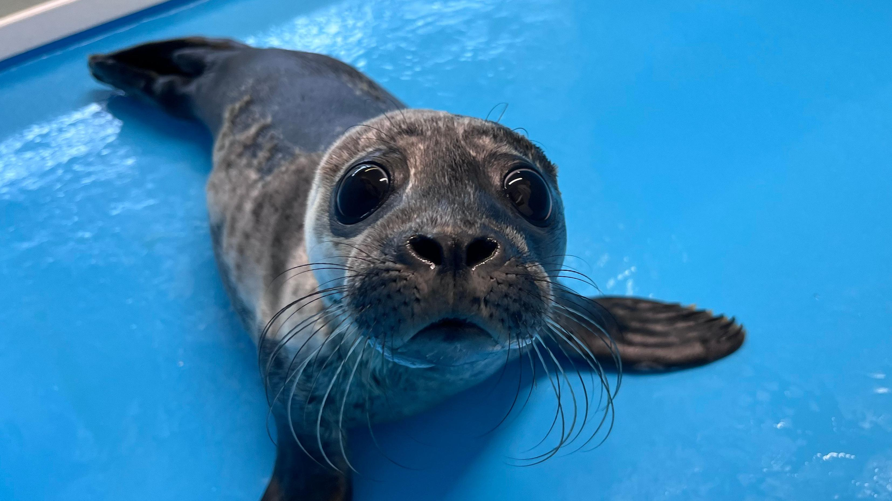
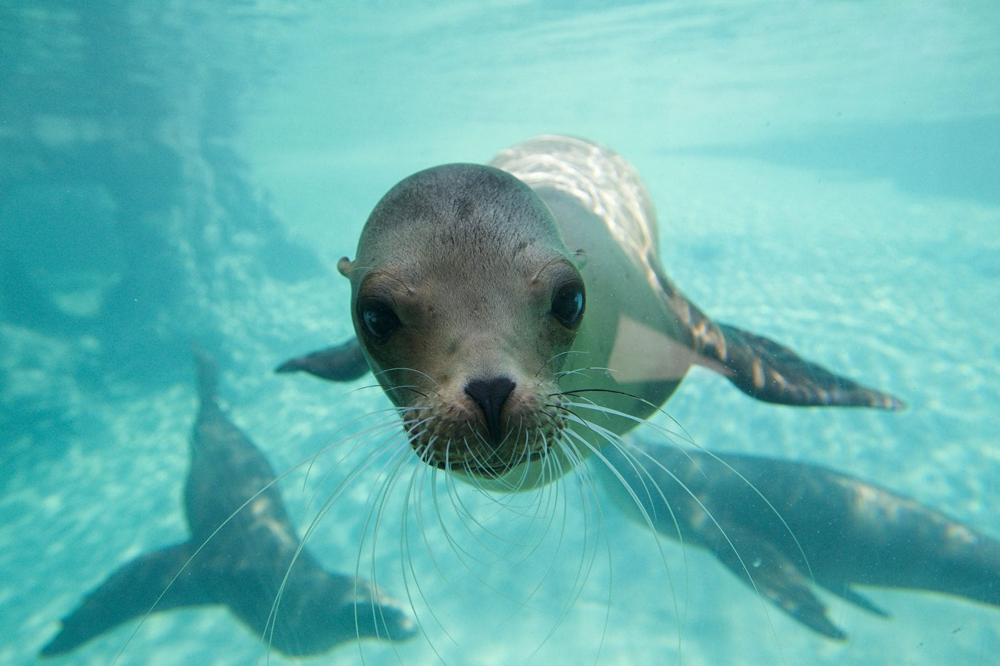

Auf dieser Seite findet ihr alles über Robben und ein paar Funfacts und noch ein Video.
Hier ein Gedicht über Robben.
EINE EISMEER-TRAGÖDIE.
Im nächtlichen Norden, nahe dem Nordpol,
Lieget ein Eisland, verloren im Eismeer.
Kaum wie ein Hauch nur grüsst es der Frühling,
Leicht wie ein Traum nur streift es der Sommer,
Weckend das wenige winzige Wachsthum –
Graues Mooswerk, grünende Gräser,
Bunte, begnügsam blühende Blumen,
Aus langem Schlafe zum Leben empor.
Friedliche Robben bewohnten die Runde,
Denen das Meer bot mächtige Mästung.
Sie tauchten empor mit wampigem Wanste,
Lagen mit glatten glänzenden Leibern
Satt sich sielend im Schimmer der Sonne
In feister Fülle des thranigen Fettes,
Friedlich bedacht auf Frass und Verdauung.
Sie lebten und liebten und mehrten sich mächtig,
Bedeckten das Eiland mit dicken Leibern
Sündlos und sorglos in seligem Dasein.

